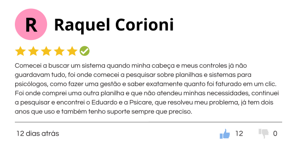
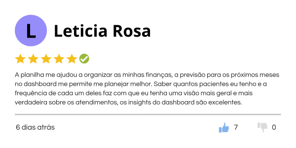
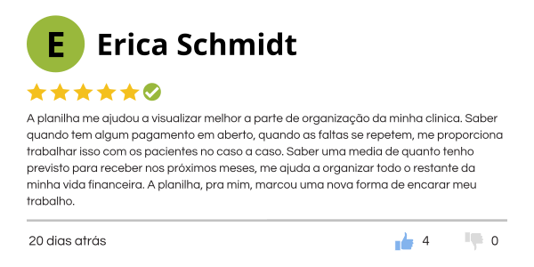
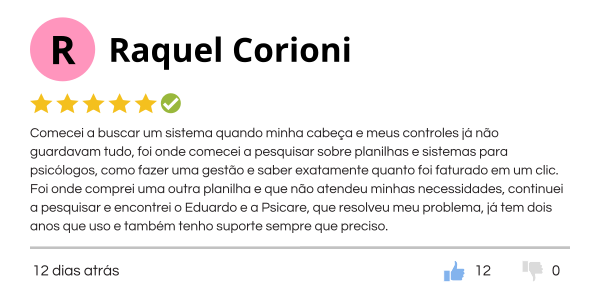
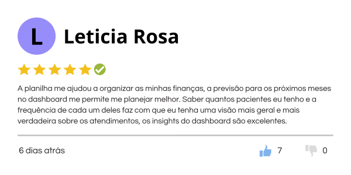
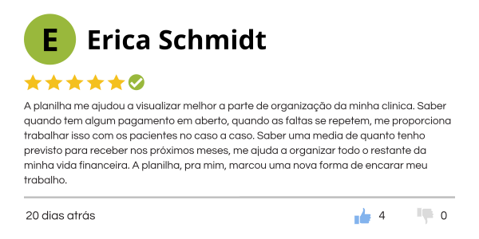

Acesso
imediato
Suporte ao vivo
no MEET
Garantia de
7 dias
Ao comprar a planilha Psi.Care você ganha de bônus acesso á versão online feito no Google Planilhas, para acessar do local que desejar, basta ter acesso à internet.

Com a Planilha Psi-Care é mais fácil fazer o controle financeiro dos seus atendimentos, de forma rápida e prática. Além de fácil é muito intuitiva e caso precise tem aulas explicando o funcionamento de cada parte da planilha.

O que estão falando
sobre a planilha Psi.Care:
 





Acesso
imediato
Suporte ao vivo
no MEET
Garantia de
7 dias
Controle financeiro
comprovadamente eficiente!
Aqui você começa a gerir suas finanças de forma muito mais prática. A base da planilha é facilitar a sua vida, para que você possa focar no que realmente importa, seus pacientes.
Cadastro de Pacientes
Nessa aba é inserida todas as informações de cada paciente, visando a melhor gestão tanto dos atendimentos quanto da parte financeira, afinal o objetivo principal da planilha é trazer mais clareza sobre os ganhos referentes aos atendimentos.
Agendamento
É aqui que você vai agendar a suas consultas, de forma simples e rápida, para que essa atividade não tome muito o seu tempo.
Agenda Diária e Semanal das Consultas
A partir daqui não é necessário mais nenhum tipo de preenchimento, na verdade, você ganhou uma nova ajudante. A planilha te mostra os seus atendimentos diários, e os seus atendimentos da semana, funcionando como uma agenda, para que você consiga se organizar e se planejar melhor.
Dashboard Dinâmico
E por último e nesse caso mais importante, temos um Dashboard dinâmico que te mostra os insights referentes aos seus atendimentos, como, por exemplo: total a receber, total recebido, total faturado em determinado mês, quantidade de atendimentos realizados, quantidade de pacientes ativos, entre outros.
Alguma Dúvida?
Se você tem alguma dúvida, nós temos um time que está pronto para responder qualquer pergunta no WhatsApp. É só clicar no botão abaixo e nos chamar.
Como surgiu a
planilha Psi.Care?
Eduardo Carvalho foi o responsável por criar a melhor planilha para controle de atendimentos e gestão financeira para os profissionais da psicologia. Tudo começa em 2021, quando sugeriu para a sua parceira Barbara Tranquillini que ele iria melhorar a forma que ela controlava as finanças dos seus atendimentos.
Ela estava usando uma planilha online que não era nada prática e que não atendia as necessidades dela. Então, Eduardo Carvalho, sendo especialista em Excel, criou uma planilha para ela, que foi a primeira versão da planilha Psi.Care, fazendo com que ela não ficasse mais presa na frente do computador fazendo contas e tentando controlar seus atendimentos e suas finanças em uma planilha muito confusa.
Dois anos depois de sua criação a planilha Psi.care já ajudou mais de 150 psicólogos que estavam na busca de uma melhor gestão financeira e controle de atendimentos.
Acesso
imediato
Suporte ao vivo
no MEET
Garantia de
7 dias
FAQ - Perguntas
Frequentes
Como eu sei que a planilha é para mim?
Sendo bem direto, se você faz atendimentos de forma constante e recebe por isso...essa planilha é para você.
Mas eu não sei usar o Excel, vou conseguir usar a planilha?
A planilha foi pensada para quem não sabe mexer no Excel. Junto com a planilha você vai ter acesso a um tutorial de como usar a planilha e se ao final do tutorial você ainda tiver dúvidas, você pode entrar em contato com o suporte que iremos te ajudar ao vivo, no cara a cara.
Eu tenho o Mac e quero usar a planilha, como que eu faço?
Pensando em poder atender todo mundo, a planilha foi feita em duas versões, a vesão em Excel e a versão online feita no Google Planilha, que você pode usar em todos os locais que desejar, basta ter acesso a internet.
Eu estou com dúvidas em relação ao pagamento da planilha: é mensal ou é anual?
O pagamento é ÚNICO, pagou, baixou, já pode usar.
Tem espaço para fazer o acompanhamento/evolução dos pacientes?
Tem sim, tem uma guia exclusiva onde é possível acompanhar a evolução de cada paciente.
Eu não sou psicólogo, posso usar a planilha?
A planilha foi feita para psicólogos, mas serve para qualquer tipo de profissional que faz atendimentos com hora marcada. Por exemplo: Personal, Professores particulares, Massagista, Terapeuta, Taróloga..., etc.
Como eu tenho acesso depois de concluída a compra?
Após a confirmação do pagamento é liberado feita a liberação do acesso a planilha. O email que você vai ter acesso é o mesmo email que foi efetuado a compra.
Acesso
imediato
Suporte ao vivo
no MEET
Garantia de
7 dias